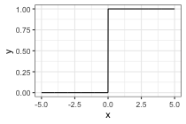
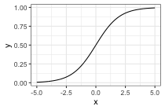
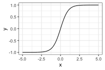
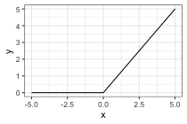
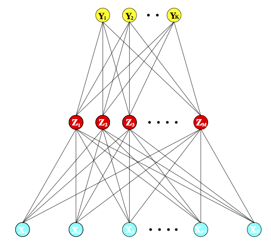
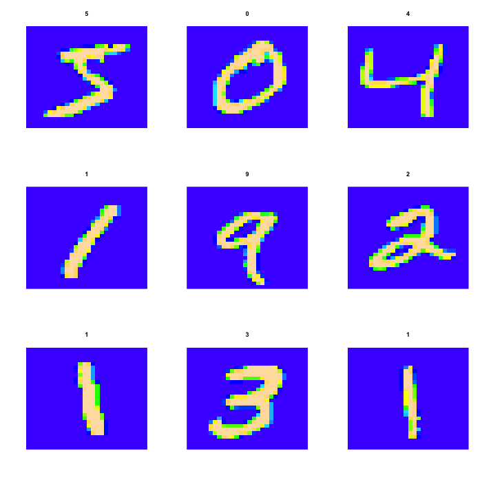
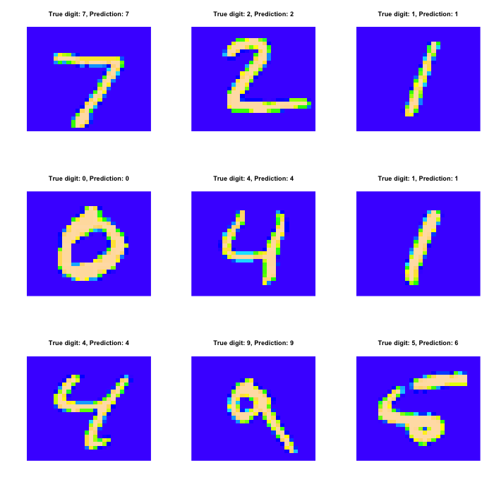

Neural nets/Deep learning
What are neural nets
How are they fit
Examples
Reading: Elements of Statistical Learning, Chapter 11.3-11.8
Review: The brain
- Neurons connected to each other.
- Neuron takes input from some of its neighbors, when there is enough
input it is “activated” and the neuron fires.
- When the neuron fires, it sends the signal to its downstream
neighbors, potentially causing them to activate and fire as well.
wikipedia’s
illustration
Idea:
- The brain somehow takes inputs and produces outputs (e.g. patterns
of light on the retina to a classification of the objects in your field
of vision, sensations in the periphery to a measure of temperature,
etc.).
- If we make a computational structure that mimics the brain, we can
train it to make predictions from arbitrary sets of inputs.
- This is just a fancy version of the regression or classification
problem.
Neural networks
Neural networks are made up of units that are supposed to mimic
neurons in the brain:

Input links: can be from other units or from the input
data
Aggregation function: Linear combination of the inputs
Activation function: \(g\),
often the sigmoid function
Output: \(a = g(\sum_i z_i
\alpha_i)\), i.e., the activation function applied to the
aggregated inputs.
Output links: Output \(a\) is
sent to other units.
Activation functions:
- Initially: a step function

- sigmoid, \(\sigma(x) = \frac{1}{1 +
\exp(-x)}\)

- tanh: \(\text{tanh}(x) = \frac{e^x -
e^{-x}}{e^x + e^{-x}}\)

- relu: \(\text{relu}(x) = \text{max}(0,
x)\) probably most common now.

Any non-linear activation function allows the net to go beyond linear
functions of the input
Activation functions should be smooth for fitting purposes (gradient
descent)
Neural net structures: putting the units together

Multiple hidden layers vs. one hidden layer
Special cases:
- One hidden layer, one unit in that layer, sigmoid activation =
logistic regression
- Linear activation function = standard regression, parameterized in a
strange way
Neural nets for regression
Notice that the net is just a fancy function of the inputs,
parameterized by the weights. Therefore, we can choose the weights so
that the net predicts a response, just like in standard linear
regression.
Function we want to optimize: \[
R(\theta) = \sum_{i=1}^N R_i = \sum_{i=1}^N (y_i - f(x_i; \theta))^2
\]
\(\theta\) is the parameter
vector we want to optimize over, containing the weights. We want to find
\(\theta\) that minimizes \(R(\theta)\).
\(f(x_i; \theta)\) is the value
computed by the net on an input point \(x_i\) with parameters \(\theta\)
Fitting is by “backpropagation”, which means gradient descent
with the computations organized in a particularly convenient
way.
Backpropagation derivation
Simple case:
One hidden layer with \(M\)
hidden units
Input variables \(x_i \in \mathbb
R^p\), \(i = 1,\ldots,
N\)
Values of the hidden unit \(m\)
for observation \(i\) is \(z_{mi} = \sigma(\alpha_{0m} + \alpha_m^T
x_i)\). The vector containing the values for all the hidden units
for sample \(i\) is \(z_i = (z_{1i}, z_{2i}, \ldots,
z_{Mi})\).
Value at the final layer is for observation \(i\) is \(f(x_i) =
g(\beta_0 + \beta^T z_i)\).
\(\theta\) is the set of weights
\(\alpha_{0m}, \alpha_m, \beta_0,
\beta\).
We want to find \(\theta\) to
minimize \[
R(\theta) = \sum_{i=1}^N R_i = \sum_{i=1}^N (y_i - f(x_i; \theta))^2
\]
We fit by gradient descent, so we need dereivatives of this
function
Derivative for the weights connecting the hidden layer to the output
layer for \(m = 1,\ldots, M\): \[
\frac{\partial R_i}{\partial \beta_{m}} = -2(y_i - f(x_i))
g'(\beta_0 + \beta^T z_i) z_{mi}
\]
For the case \(m = 0\): \[
\frac{\partial R_i}{\partial \beta_{m}} = -2(y_i - f(x_i))
g'(\beta_0 + \beta^T z_i)
\]
Derivative for the weights connecting the input layer to the hidden
layer: \[
\frac{\partial R_i}{\partial \alpha_{ml}} = -2(y_i - f(x_i))
g'(\beta_0 + \beta^T z_i) \beta_m\sigma'(\alpha_m^T x_i) x_{il}
\]
Gradient descent update is then: \[
\begin{align*}
\beta_m^{(r+1)} = \beta_{m}^{(r)} - \gamma_r \sum_{i=1}^N \frac{\partial
R_i}{\partial \beta_{m}^{(r)}}\\
\alpha_{lm}^{(r+1)} = \alpha_{ml}^{(r)} - \gamma_r \sum_{i=1}^N
\frac{\partial R_i}{\partial \alpha_{ml}^{(r)}}
\end{align*}
\]
\(\gamma_r\) is referred to as the
“learning rate”, we’ve seen it as the step size before.
Back-propagation equations, aka “what order do we do the computations
in”?
Write \[
\begin{align*}
\frac{\partial R_i}{\partial \beta_{m}} &= \delta_{i} z_{mi} \\
\frac{\partial R_i}{\partial \alpha_{ml}} &= s_{mi} x_{il}
\end{align*}
\] so \[
\begin{align*}
\delta_i &= -2(y_i - f(x_i))g'(\beta_0 + \beta^T z_i) \\
s_{mi} &= -2(y_i - f(x_i)) g'(\beta_0 + \beta^T z_i) \beta_m
\sigma'(\alpha_m^T x_i)
\end{align*}
\] and \[
s_{mi} = \sigma'(\alpha_m^T x_i) \beta_m \delta_i
\]
Interpretation: \(\delta_i\) and
\(s_{mi}\) are the “errors” from the
current model on the output layer and the hidden layers,
respectively.
Finally, backpropagation algorithm to compute the gradients:
Forward pass:
- Fix a set of weights \(\theta\)
- Compute \(z_i\), \(f(x_i)\) given the weights
Backward pass:
- Compute \(\delta_i\) and \(\frac{\partial R_i}{\partial \beta_m}\)
from the residuals
- Compute \(s_{mi}\) and \(\frac{\partial R_i}{\partial \alpha_{ml}}\)
from \(\delta_i\), \(\theta\), input values
Notes:
- Backpropagation equations just rely on the chain rule
- Can use any smooth activation function
- Can use any architecture (more hidden layers, different kinds of
connections between the layers, more than one output layer, etc.)
- Applies to classification problems as well as regression
problems
Issues with fitting:
- Model is over-parameterized
- Non-convex, many local optima, gradient descent will converge to
just one
- Many different strategies to deal with this. Often don’t actually
want even an exact local optimum, many different “regularization”
methods are used.
Example: zip code data

Goal: Given images representing digits, classify them correctly.
Input data, \(x_i\), are \(16 \times 16\) grayscale images,
represented as vectors in \(\mathbb
R^{256}\)
Responses \(y_i\) give the digit in
the image.
Encode this as a classification problem, use neural nets with
different architectures to fit
Some net architectures

All cases: 10 output units, corresponding to the 10 possible digits.
In all cases the output unit is sigmoidal.
Net 1: No hidden layer, equivalent to multinomial logistic
regression
Net 2: One hidden layer, 12 hidden units. Each of the hidden
units is connected to each of the 256 input variables and to each of the
10 output variables.
Net 3: Two hidden layers
First hidden layer: 64 hidden units arranged in an 8 x 8 grid.
Each hidden unit is connected to a 3x3 patch of the input
variables.
Secand hidden layer: 16 hidden units arranged in a 4 x 4 grid.
Each hidden unit is connected to a 5 x 5 patch in the first hidden
layer.
Net 4: Two hidden layers with weight sharing in the first
layer.
First hidden layer: 128 hidden units, conceptualized as two 8 x 8
grids, each connected to a 3x3 patch of the input variables, similar to
Net 3. Additional constraint that each of the units within the 8 x 8
feature map have the same set of 9 weights.
Second hidden layer: 16 hidden units arranged in a 4 x 4 grid,
each connected to a 5 x 5 patch in each of the two 8 x 8 grids in the
first hidden layer (so each hidden unit connected to 50 units in the
first hidden layer).
Net 5: Two hidden layers with weight sharing in both layers:
First hidden layer: Same is in Net 4.
Second hidden layer: 64 hidden units arranged as four 4 x 4
grids. Each unit connected to a 5 x 5 patch of the fisrt hidden layer,
and within each 4 x 4 grid, the weights connecting that unit to the
previous input unit are the same.
Idea behind weight constraints: Each unit computes the same
functional of the previous layer, so they are extracting the same
features from different parts of the image. A net with this sort of
weight sharing is referred to as a convolutional network.
Example: the same zip code data
## if you want to do this you'll have to install some the python version of keras first, which requires you to have TensorFlow, CNTK, or Theano installed as well
library(keras)
mnist = dataset_mnist()
## Loaded Tensorflow version 2.1.0
img_rows = img_cols = 28
num_classes = 10
x_train = mnist$train$x
x_train = array_reshape(x_train, c(nrow(x_train), img_rows, img_cols, 1))
y_train = mnist$train$y
y_train_matrix = to_categorical(y_train, num_classes = num_classes)
x_test = mnist$test$x
x_test = array_reshape(x_test, c(nrow(x_test), img_rows, img_cols, 1))
y_test = mnist$test$y
Let’s look at some of the images:
## function to rearrange things so that we can plot them
flip_image = function(x) {
n = nrow(x)
return(t(x[n:1,]))
}
par(mfrow = c(3,3))
for(i in 1:9) {
image(flip_image(x_train[i,,,]), col = topo.colors(100), axes = FALSE,
main = y_train[i])
}

model = keras_model_sequential()
model %>%
layer_flatten(input_shape = c(img_rows, img_cols, 1)) %>%
layer_dense(units = 128, activation = 'relu') %>%
layer_dense(units = num_classes, activation = 'softmax')
model %>% compile(
optimizer = 'adam',
loss = loss_categorical_crossentropy,
metrics = 'accuracy'
)
model
## Model: "sequential"
## ________________________________________________________________________________
## Layer (type) Output Shape Param #
## ================================================================================
## flatten (Flatten) (None, 784) 0
## ________________________________________________________________________________
## dense_1 (Dense) (None, 128) 100480
## ________________________________________________________________________________
## dense (Dense) (None, 10) 1290
## ================================================================================
## Total params: 101,770
## Trainable params: 101,770
## Non-trainable params: 0
## ________________________________________________________________________________
## number of parameters for the first layer: each hidden unit has a weight associated with each of the 784 predictor units, plus a bias term
(784 + 1) * 128
## [1] 100480
## number of parameters for the second layer: each output unit has a weight associated with each of the 128 hidden units, plus a bias term
(128 + 1)* 10
## [1] 1290
Fit the model, look at the predictions:
model %>% fit(x = x_train, y = y_train_matrix, epochs = 15)
test_predictions = model %>% predict(x_test) %>% k_argmax() %>% as.vector
par(mfrow = c(3,3))
for(i in 1:9) {
image(flip_image(x_test[i,,,]), col = topo.colors(100), axes = FALSE,
main = sprintf("True digit: %i, Prediction: %i", y_test[i], test_predictions[i]))
}

More elaborate architectures do much better, for example the convolutional
model.
model_conv <- keras_model_sequential() %>%
layer_conv_2d(filters = 32, kernel_size = c(3,3), activation = 'relu',
input_shape = c(img_rows,img_cols,1)) %>%
layer_conv_2d(filters = 64, kernel_size = c(3,3), activation = 'relu') %>%
layer_max_pooling_2d(pool_size = c(2, 2)) %>%
layer_dropout(rate = 0.25) %>%
layer_flatten() %>%
layer_dense(units = 128, activation = 'relu') %>%
layer_dropout(rate = 0.5) %>%
layer_dense(units = num_classes, activation = 'softmax')
model_conv %>% compile(
loss = loss_categorical_crossentropy,
optimizer = 'adam',
metrics = c('accuracy')
)
model_conv
model_conv %>% fit(x = x_train, y = y_train_matrix, epochs = 15)
Summing up
- Deep learning = neural nets with more than one hidden layer. In
practice, these work better than the single-hidden-layer networks.
- Think of as predictors that can fit complex functions of the input
variables
- Also able to handle other kinds of output, e.g. sequences (natural
language processing, machine translation)
- Good when you have a lot of data, are interested solely in
prediction
- Not as good when you don’t have so much data or need an
interpretation of the relationship between the predictors and
response.
{kind=link}